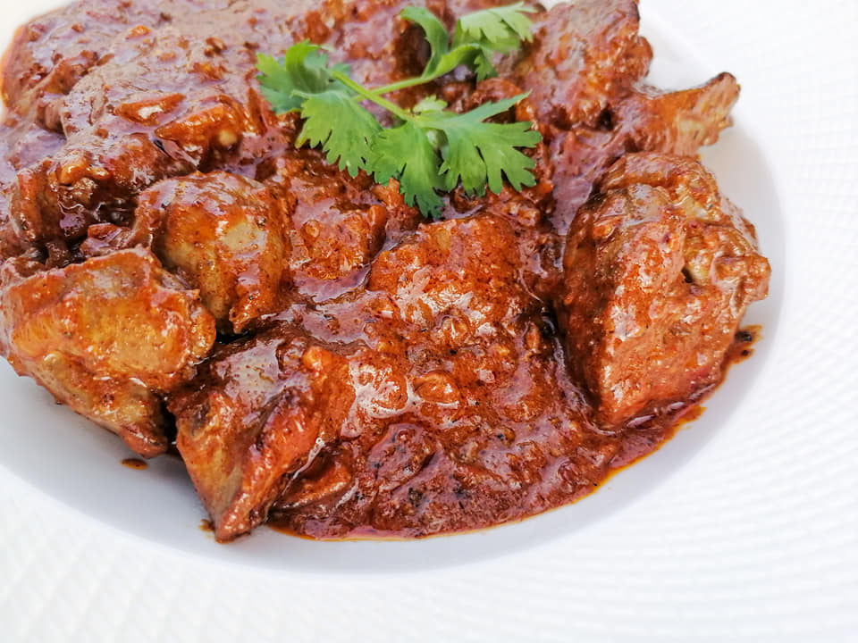

Creamy Peri chicken livers
Prep time : 30 - 45 min
Ingredients
Cooking oil
Onion
Garlic
Steps
Add 1/3 of cooking oil in a pan
Put the onions in
When your onions are cooked well, add your livers
Leave the livers for a minute on one side before you turn them over to avoid them breaking down
Add garlic
If you do not like spicy food, you can substitute this with Cayenne or Paprika
Sprinkle of thyme, Black pepper, 1 cube of knorox chicken flavour
Cook and stir until they done on both sides
Add the Peri Peri sauce
Toss and add fresh cream, about half a cup
Stir and let it simmer for just 2 minutes
Dish out, Final product could be served with Toasted bruschetta or garlic bread